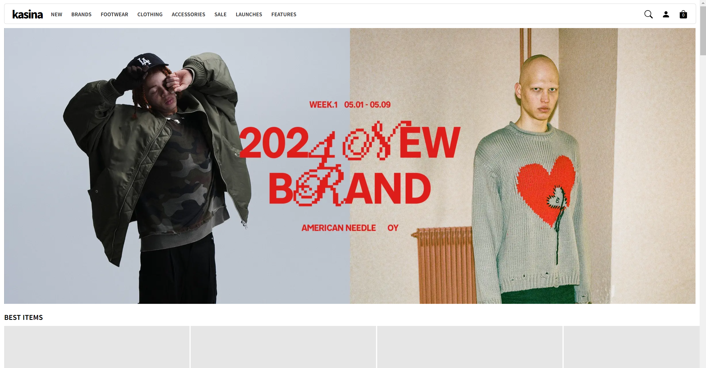
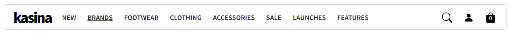
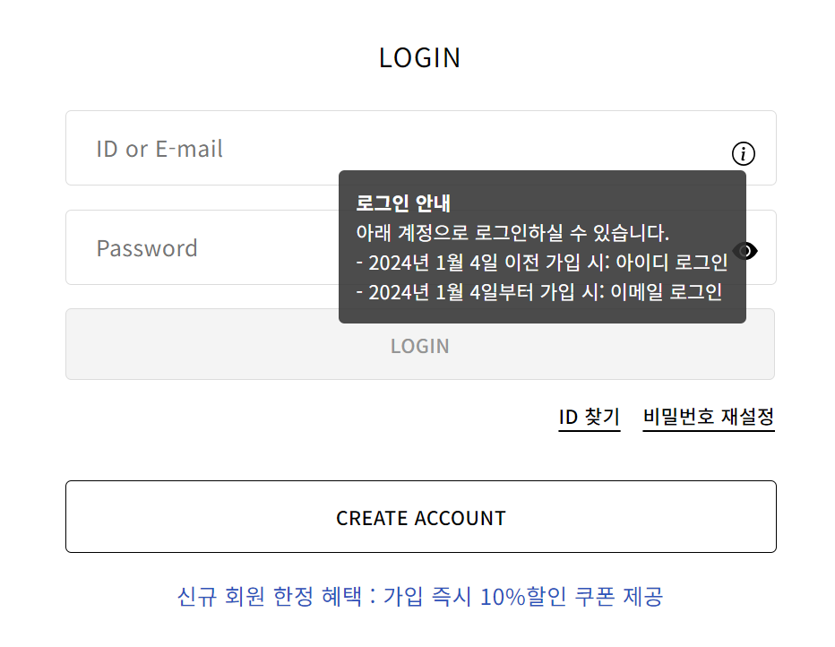

About Project
- 팀 프로젝트로 둘이서 KASINA사이트의 Clone coding을 진행하게 됨.
- 연휴에( 05.03 ~ 05.06 ) 각자의 공간에서 진행했던 팀 프로젝트로 팀원간의 소통의 중요성을
알게 됨.
- 팀 프로젝트를 진행하며 GitHub의 branch 활용법을 자세히 알게 됨.
Task
- header부분과 상세페이지 중 로그인 페이지를 제작


EPISODE 1
- 나는 헤더, 상대방은 푸터 그리고 인당 상세페이지 한부분씩을 만들기로 정하고 연휴( 5/3
오후~5/7 오전 약3.5일 )에 들어갔다.
깃허브로 브랜치도 처음 등록해보고 야심차게 서로
떨어져있는 상황에서 효율적으로 팀 프로젝트를 할 수 있도록 만들어놓고, 구조적인 것을 각자
완성하며 카카오톡으로 활발한 연락도 하였다.
연휴가 끝나고 깃 허브에서 그동안 각자
했던 것들을 합치는 과정에서 엄청나게 많은 문제점에 직면했다.
일단은 깃허브의
브랜치를 만들어놓고 메인의 index.html의 같은 페이지에서 작업하지않고 각각 나누어진
브랜치에서 다른 파일의 이름으로 작업을 해서
결국에는 깃으로 오류를 비교해가며 한번에
합치지 못하고 서로의 코드 하나의 파일로 수작업으로 갖다 붙이는 불상사가 발생했고그
과정에서 강사님께서 이 부분의 오류를 잡기위한 방법을 알려주셨다.
결국 깃 허브로
야심차게 준비한 팀 프로젝트였지만 각자 따로 한 프로젝트였던 것이었다.
이러한 과정 속에서 팀프로젝트를 할 때 Git의 중요성과 branch의 활용법을 알 수 있었다.
EPISODE 2
- 각자의 페이지에서는 잘 작동하고 구조가 맞았지만, 코드를 모두 합치고 나니까 구조도
뒤틀리고 작동도 제대로하지 않아서 문제점을 찾기 시작했다.
서로 소통이 잘 되었다고 생각했지만 서로 class명을 정할때, 같은 class명을 사용한것이
문제였다.
가장 큰 문제점을 보자면 둘다 각자 header와 main, footer에 크게 wrap으로 싸서 class를
주었는데 css파일을 모두 합치는 과정에서 충돌이 일어났던 것이다.
그래서 어느부분을
어떻게 했다라는것만 소통할것이 아니라 코딩을 하는 사람으로서 소통해야하는 부분들을
알게되었다.
이 과정 속에서 앞으로 다른 누군가와 팀으로 프로젝트를 한다면 주석이나 class명, body부분에
직접 css적용 등에 대해서는 많은 이야기를 하며 먼저 신경쓰며 해야겠다는 생각을 했다.